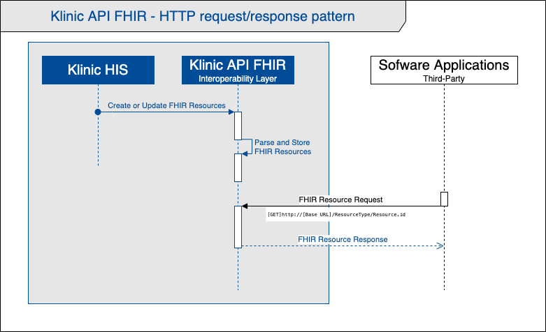
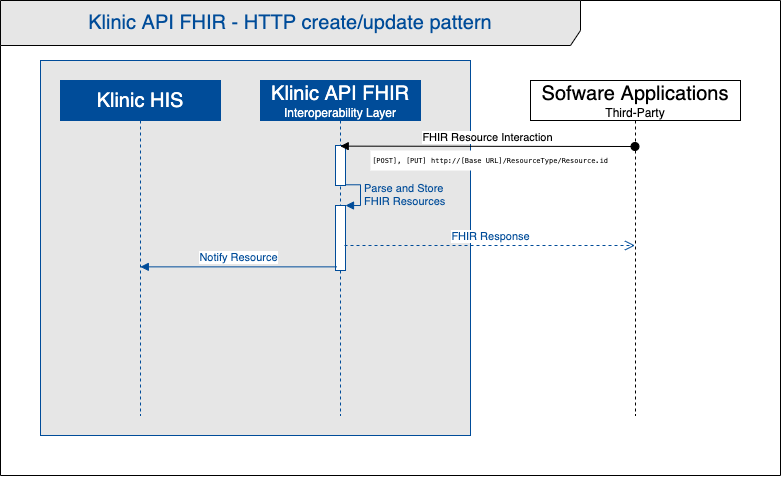

Klinic API FHIR Implementation Guide: IG Release 1 - Digital Ware S.A.
1.0 - trial-use
Klinic API FHIR Implementation Guide: IG Release 1 - Digital Ware S.A. - Local Development build (v1.0). See the Directory of published versions
Klinic API FHIR is the interoperability layer of Klinic HIS, through which third-party software applications can perform query interactions to obtain information resources from the Klinic Electronic Health Care Records (EHR).
To do this, Klinic API FHIR uses international HL7 FHIR (R4) standards and RESTful API as a resource exchange mechanism.
Some interactions allow third parties to create/publish (POST) and even update (PUT) resources in the Klinic API FHIR.
Klinic HIS and Klinic API FHIR are products of DigitalWare S.A.
This repository contains the documentation for the FHIR profiles that have been defined for the Klinic API FHIR.
Contains descriptions of structure definitions for profiles and extensions used in the Klinic API FHIR and examples of FHIR resources.
The first version (1.0) of this documentation (February 2021), is the product of teamwork effort.
| Name | |
|---|---|
| Juan Manuel Contreras Hernandez | juanch@digitalware.com.co |
| Diana Rodriguez Suarez | dianaro@digitalware.com.co |
| Daniel Felipe Castro Romero | danielc@digitalware.com.co |
| Eduardo Felipe Solis Hernandez | felipesh@digitalware.com.co |
| Mario Enrique Cortés M | mario.cortes@hl7co.org |
The following diagrams represent the sequence of Klinic interactions with any external third-party software, using the HL7 FHIR standard.

It is simple. If an authorized third-party software requires obtaining / consulting information from Klinic electronic health care records (EHR), it must use read interactions (GET) and HTTP RESTful queries to the API, according to the specifications of the HL7 FHIR standard. (R4).
If the information resource is available, Klinic API FHIR, the FHIR response will deliver a resource or resource bundle. Otherwise, the response will be an operation outcome resource.

In the same way, if third-party software is authorized to send information to Klinic, it must use interactions to create (POST) or update (PUT) resources through HTTP RESTful to the API, in accordance with the specifications of the HL7 FHIR standard (R4).
Eventually, there are software applications whose interoperability mechanism is based on the event-driven architecture and require the reception of messages.
For these cases, Klinic API FHIR uses MessageHeader type FHIR resources, which allow notification through messaging events (push), the creation or update of certain resources.
On the next page, the notification pattern is specified by pushing FHIR message headers.